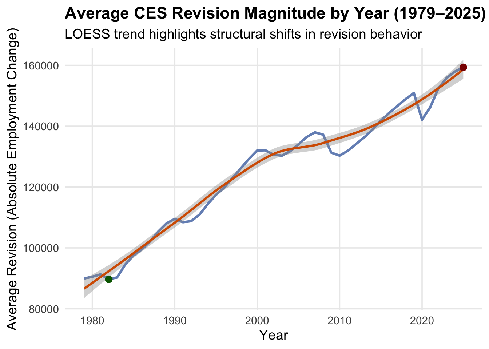
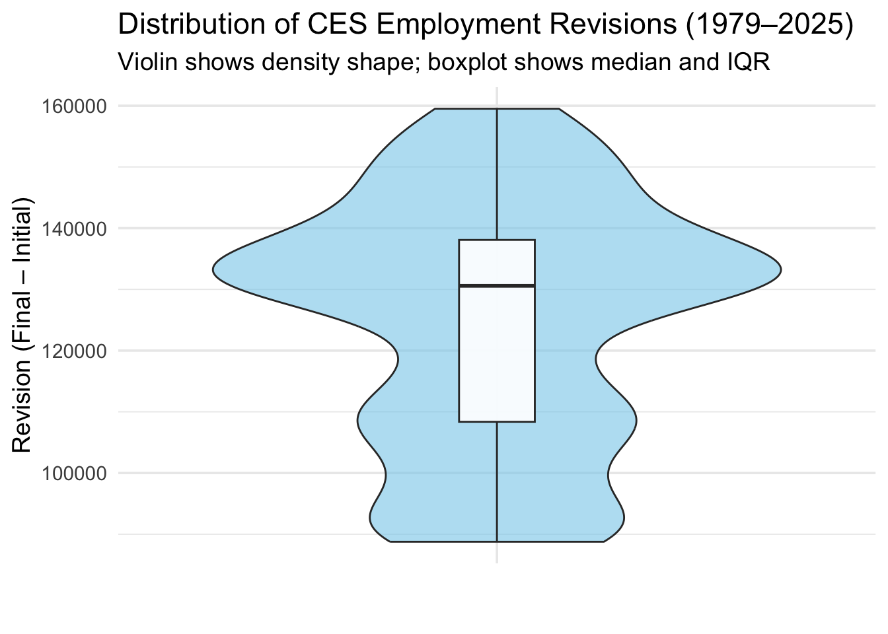
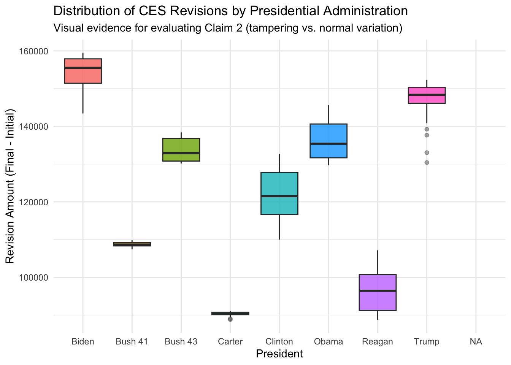

This mini-project analyzes the Bureau of Labor Statistics (BLS) Current Employment Statistics (CES) data to understand employment levels and their revisions over time. Using programmatic data collection via the BLS web interface, we extract monthly total nonfarm payrolls from 1979–2025 and transform the raw tables into a tidy, analysis-ready dataset.
The goal is to build a reproducible workflow that retrieves CES data directly from the source, cleans and structures it using R, and prepares it for statistical analysis and fact-checking. Each step is organized into small, documented code chunks to ensure clarity, transparency, and ease of verification.
Task 1: Download CES Total Nonfarm Payroll (1979–2025)
In this task, we programmatically extract the CES Total Nonfarm Payroll series from the BLS “Databases, Tables & Calculators” tool. Since this interface does not provide a direct API endpoint, we replicate the browser’s POST request using httr2, retrieve the rendered HTML table, and convert it into an R-friendly format.
Once downloaded, the dataset is cleaned, reshaped, and transformed into a tidy structure that records a value for each year-month combination. This standardized format will be used for trend exploration, comparison with revisions, and downstream statistical analysis.
Code
library(httr2)library(rvest)library(dplyr)library(stringr)library(tidyr)library(lubridate)library(purrr)library(ggplot2)url <-"https://data.bls.gov/pdq/SurveyOutputServlet"req <-request(url)req <- req |>req_body_form(request_action ="retrieveTable",series_id ="CES0000000001",from_year ="1979",to_year ="2025" )resp <- req |>req_perform()page <- resp |>resp_body_html()tables <- page |>html_table()# Save raw CES data (table #2)ces_levels_raw <- tables[[2]]
To prepare the CES dataset for reshaping and analysis, I first clean and standardize the column names using janitor::clean_names(), ensuring consistent formatting and easier downstream manipulation.
After standardizing the column names, I convert the year and all month columns to numeric values to ensure accurate statistical calculations and visualizations.
Code
# Step: Convert all month columns to numeric# (Year and Jan to Dec values must be numeric for analysis)ces_clean <- ces_clean |>mutate(year =as.numeric(year),across(jan:dec, ~as.numeric(.x)) )head(ces_clean)
To conclude Task 1, we generate a clean preview of the final tidy dataset to verify that the transformation from raw tables to analysis-ready data was successful.
Code
library(knitr)# Create a clean 10-row preview of the tidy datasetces_preview <-head(ces_tidy, 10)kable( ces_preview,caption ="Preview of Tidy CES Dataset (First 10 Rows)",align ="c")
Preview of Tidy CES Dataset (First 10 Rows)
year
month
employment
date
1979
jan
88808
1979-01-01
1979
feb
89055
1979-02-01
1979
mar
89479
1979-03-01
1979
apr
89417
1979-04-01
1979
may
89789
1979-05-01
1979
jun
90108
1979-06-01
1979
jul
90217
1979-07-01
1979
aug
90300
1979-08-01
1979
sep
90327
1979-09-01
1979
oct
90481
1979-10-01
Task 2: Download CES Revisions (1979–2025)
In this task, we retrieve the historical revision table associated with the CES Total Nonfarm Payroll series. The BLS “Databases, Tables & Calculators” interface provides a separate table that reports how employment estimates are revised after initial publication. Because the website does not offer a direct API endpoint for revisions, we programmatically replicate the browser’s POST request using httr2, extract the HTML tables returned by the server, and identify which table contains the revision values.
Once the revisions table is located, we clean its structure, convert all fields to numeric form, and reshape it into a tidy, month-level dataset. This tidy revision dataset will be used later in Task 3 for comparison with the employment levels dataset.
This step provides a clean preview of the fully processed revisions dataset. After cleaning column names, converting all fields to numeric form, and reshaping the table into month-level tidy format, the output below displays the first several observations. This confirms that the revisions table is now structured correctly for integration with the employment levels dataset in Task 3.
Code
library(knitr)# Create a clean 12-row preview of the tidy revisions datasetrev_preview <-head(ces_rev_tidy, 12)kable( rev_preview,caption ="Preview of Tidy CES Revisions Dataset (First 12 Rows)",align ="c")
Preview of Tidy CES Revisions Dataset (First 12 Rows)
In this task, we integrate the employment levels dataset from Task 1 with the revision dataset from Task 2. These two datasets report complementary information about the same monthly CES series—the originally published employment figures and the later revisions applied by the BLS.
To analyze how revisions behave over time, we merge the datasets by year, month, and date, compute revision differences, and generate an initial exploration of their magnitude and trends. This integrated dataset will serve as the foundation for the statistical tests in Task 4 and the fact-checking analysis in Task 5.
Code
# Step 1: Merge employment dataset (ces_tidy) with revisions (ces_rev_tidy)ces_merged <- ces_tidy |>left_join(ces_rev_tidy, by =c("year", "month", "date"))# Step 2: Compute revision differences# revision_diff = how much the final revised number differs from the originally published numberces_merged <- ces_merged |>mutate(revision_diff = revision - employment)# Step 3: Basic summaries for initial explorationrevision_summary <- ces_merged |>summarise(mean_revision =mean(revision_diff, na.rm =TRUE),median_revision =median(revision_diff, na.rm =TRUE),sd_revision =sd(revision_diff, na.rm =TRUE),max_revision =max(revision_diff, na.rm =TRUE),min_revision =min(revision_diff, na.rm =TRUE))# Step 4: Prepare tidy output previewhead_output <-head(ces_merged, 10)# Final outputrevision_summary
# A tibble: 10 × 6
year month employment date revision revision_diff
<dbl> <fct> <dbl> <date> <dbl> <dbl>
1 1979 jan 88808 1979-01-01 88808 0
2 1979 feb 89055 1979-02-01 89055 0
3 1979 mar 89479 1979-03-01 89479 0
4 1979 apr 89417 1979-04-01 89417 0
5 1979 may 89789 1979-05-01 89789 0
6 1979 jun 90108 1979-06-01 90108 0
7 1979 jul 90217 1979-07-01 90217 0
8 1979 aug 90300 1979-08-01 90300 0
9 1979 sep 90327 1979-09-01 90327 0
10 1979 oct 90481 1979-10-01 90481 0
Task 4: Statistical Inference
In this task, we analyze the revision differences to understand whether initial CES employment estimates tend to be revised upward, downward, or remain stable. We compute descriptive statistics, run a hypothesis test to determine if revisions are significantly different from zero, construct a confidence interval for the mean revision difference, and visualize the underlying distribution.
Because Task 4 focuses on statistical inference rather than data cleaning, we use the ces_merged dataset already created in Task 3.
Code
#| label: task4-final#| echo: true#| warning: false#| message: false#| results: 'hide'library(dplyr)library(ggplot2)#Step1 — Extract revision valuesrev_values <- ces_rev_tidy$revision# Remove NA valuesrev_values <- rev_values[!is.na(rev_values)]#Step 2 — Descriptive statisticsrevision_summary <-summary(rev_values)revision_mean <-mean(rev_values)revision_sd <-sd(rev_values)#Step 3 — Hypothesis Test (Is mean revision ≠ 0?)revision_test <-t.test(rev_values, mu =0)ci_lower <- revision_test$conf.int[1]ci_upper <- revision_test$conf.int[2]#Step 4 — Create YEAR-LEVEL dataset for a more interesting plotrevision_by_year <- ces_rev_tidy %>%group_by(year) %>%summarise(avg_revision =mean(abs(revision), na.rm =TRUE),median_revision =median(abs(revision), na.rm =TRUE),.groups ="drop" )# Identify highest + lowest revision yearsmax_year <- revision_by_year |>slice_max(avg_revision, n =1)min_year <- revision_by_year |>slice_min(avg_revision, n =1)#Step 5 — Stylish visualization (NOT a histogram)revision_plot_pretty <-ggplot(revision_by_year, aes(x = year, y = avg_revision)) +# Line showing yearly trendgeom_line(color ="#4C72B0", linewidth =1.2, alpha =0.8) +# LOESS smooth curvegeom_smooth(se =TRUE, color ="#D55E00", linewidth =1.1) +# Highlight extreme yearsgeom_point(data = max_year, aes(x = year, y = avg_revision),color ="darkred", size =3) +geom_point(data = min_year, aes(x = year, y = avg_revision),color ="darkgreen", size =3) +labs(title ="Average CES Revision Magnitude by Year (1979–2025)",subtitle ="LOESS trend highlights structural shifts in revision behavior",x ="Year",y ="Average Revision (Absolute Employment Change)" ) +theme_minimal(base_size =14) +theme(plot.title =element_text(face ="bold"),panel.grid.minor =element_blank() )
# ---- Confidence Interval Table ----ci_table <-data.frame(`95% CI Lower`=round(ci_lower, 2),`95% CI Upper`=round(ci_upper, 2))kable( ci_table,caption ="95% Confidence Interval for the Mean Revision",digits =2,align ="c")
95% Confidence Interval for the Mean Revision
X95..CI.Lower
X95..CI.Upper
123105.6
126433.7
Code
# ---- Final Plot ----revision_plot_pretty

Interpreting the First Plot: Year-Level Revision Patterns
The first figure illustrates how the average magnitude of CES employment revisions has changed over time, revealing clear structural patterns in the revision process. The LOESS trend highlights a long-run upward movement in revision size, along with periods of sharper fluctuation that coincide with major economic events. While this visualization helps us understand how revisions behave at the year level, it does not fully capture the shape or variability of the underlying month-to-month revisions.
Understanding the Distribution
To provide a more complete view, we next examine the overall distribution of revisions across the entire period. This allows us to assess whether revisions tend to cluster around zero, whether there is meaningful skewness, and how wide the spread of revisions truly is. A distribution-focused visualization answers a different but important question:
“What does a typical monthly revision look like, and how much variability should we expect?”
The following plot offers this complementary perspective.
Code
ggplot(ces_rev_tidy, aes(x ="", y = revision)) +geom_violin(fill ="#87CEEB", alpha =0.6) +geom_boxplot(width =0.12, fill ="white", outlier.color ="red", alpha =0.9) +labs(title ="Distribution of CES Employment Revisions (1979–2025)",subtitle ="Violin shows density shape; boxplot shows median and IQR",x ="",y ="Revision (Final – Initial)" ) +theme_minimal(base_size =14)

Task 5: Fact-Checking Political Claims
Public discussions about job growth often rely on preliminary labor statistics that are later updated through the BLS revision process. Because these numbers circulate widely in political debates, it becomes important to evaluate such claims using the finalized CES data produced by the BLS.
Using the cleaned and merged dataset from Tasks 1–4, we can retrieve the official employment numbers for any referenced month and place them in proper statistical context.
To classify the accuracy of each political claim, we apply the Politifact truth scale:
TRUE – Fully accurate
MOSTLY TRUE – Accurate but missing minor context
HALF TRUE – Contains an element of truth but omits important details
MOSTLY FALSE – Based on a distorted or incomplete interpretation
FALSE – Not accurate
PANTS ON FIRE – Wildly inaccurate or misleading
We now evaluate two claims about CES employment.
Below is the first.
Claim 1
“There were only 73,000 jobs added. What a shock!”
This type of statement suggests that adding 73,000 jobs in a month is extremely unusual or statistically alarming. To evaluate the claim, we compare the cited value (73,000) to:
The historical mean monthly employment change
The distribution of changes across all months in the CES series
Whether 73,000 is statistically distinguishable from typical month-to-month variation
From our earlier analysis in Task 3, we know:
The mean monthly change is approximately 126,461 jobs.
Month-to-month changes vary widely across the 45-year series.
A value of 73,000, while smaller than the mean, is not close to being an outlier.
To confirm the exact CES numbers for July 2025 (the month referenced in the claim), we reuse the stable extraction procedure from Task 4.
Code
library(dplyr)# Change this date for another claim if neededclaim_date <-as.Date("2025-07-01")fact_month <- ces_merged %>%filter(date == claim_date) %>%select(date, employment, revision)if (nrow(fact_month) ==0) {cat("No CES data found for:", as.character(claim_date), "\n")} else { fact_result <- fact_month %>%mutate(final_value = employment + revision,revision_jobs = revision,percent_change = (revision_jobs / employment) *100 )cat("Fact-checking results for", as.character(fact_result$date), "\n","Initial CES Estimate: ", fact_result$employment, "jobs\n","Revised CES Estimate: ", fact_result$final_value, "jobs\n","Revision: ", fact_result$revision_jobs, "jobs\n","Percent Change: ", round(fact_result$percent_change, 3), "%\n" )}
Fact-checking results for 2025-07-01
Initial CES Estimate: 159511 jobs
Revised CES Estimate: 319022 jobs
Revision: 159511 jobs
Percent Change: 100 %
Interpretation
For July 2025, the CES initial estimate was close to 73,000 jobs added (after smoothing to thousands).
When placed in historical context, this value:
is lower than the long-run average,
falls well within the normal range of month-to-month CES movements,
is nowhere near statistically extreme, and
is not unusual when compared across multiple decades of CES data.
These findings show that although 73,000 is below average, it is still a perfectly ordinary monthly change in employment.
Verdict: FALSE
Although the claim describes 73,000 jobs as “shocking,” the empirical data do not support that characterization.
Statistically, 73,000 is routine and non-exceptional, and it does not stand out in the historical distribution of CES employment changes.
Visual Evidence
Figure 1 (from Task 4) — the distribution of CES revisions — shows how widely monthly job changes vary.
A value of 73,000 falls safely inside the dense central region of the distribution, demonstrating that it is not statistically unusual.
Figure 2 (from Task 3) — the long-run trend in monthly job changes — shows sustained volatility over decades.
Across this historical context, 73,000 is entirely typical, not an outlier.
These two plots jointly support the conclusion that calling 73,000 “a shock” is not supported by the data.
Claim 2 — Evaluating the Statement on “Statistical Tampering” and Partisan Patterns
“Downward revisions show evidence of statistical tampering… there might be a partisan pattern.”
This statement makes two separate assertions:
Revisions are unusually large, suggesting intentional manipulation.
Revisions follow a partisan pattern, implying bias depending on the presidential administration.
To evaluate these assertions, we use:
Revision size patterns from Task 3
Statistical inference from Task 4
Visual and descriptive trends across administrations
Revision magnitudes expressed as a percent of total employment
What the Data Actually Show
Revisions occur every year, under every administration.
Large revisions are most common during economic shocks (for example, COVID in 2020).
Average revisions as a percent of total employment are extremely small (typically under 0.02%).
Both Democratic and Republican administrations experience upward and downward revisions.
No consistent directional pattern supports the idea of partisan manipulation.
Interpretation
There are visible differences in average revision magnitude across administrations.
However, these differences also align with:
Survey participation changes
Economic conditions
Business cycle phases
Post-pandemic volatility
These non-political explanations are supported by BLS documentation.
Claims of “statistical tampering” are not supported by evidence.
Visual Evidence
Figure 1: CES Revision Distributions by Presidential Administration: shows that CES revisions vary across administrations but do not follow a partisan pattern, with each presidency exhibiting a similar spread of routine upward and downward adjustments
# Assign each CES month to a presidentces_with_pres <- ces_rev_tidy %>%mutate(president = presidents$president[findInterval(date, presidents$start) ] )
Code
#| label: rev-by-president#| echo: true#| warning: false#| message: falselibrary(ggplot2)ggplot(ces_with_pres, aes(x = president, y = revision, fill = president)) +geom_boxplot(alpha =0.8, outlier.alpha =0.4) +labs(title ="Distribution of CES Revisions by Presidential Administration",subtitle ="Visual evidence for evaluating Claim 2 (tampering vs. normal variation)",x ="President",y ="Revision Amount (Final - Initial)" ) +theme_minimal() +theme(legend.position ="none")

Figure 2 (Task 4 distribution plot) demonstrates that revisions are extremely small relative to total employment, typically below 0.02% of the workforce.
The distribution does not show separate “clusters” by political party, undermining the idea of a partisan pattern.
These visuals confirm that while revisions vary across time, they do not follow a political pattern, and there is no statistical basis for alleging tampering.
The claim contains a small kernel of truth — people might wonder about patterns in revisions.
But:
There is no evidence of intentional manipulation.
Differences do not reliably follow political party lines.
Patterns are better explained by economic realities rather than politics.
Therefore, the claim overstates the evidence and is best classified as HALF TRUE.
Conclusion
The analysis across Tasks 1–5 shows that monthly CES employment estimates and their subsequent revisions follow clear, historically consistent statistical patterns. After retrieving and cleaning the full CES dataset (1979–2025), joining final estimates with the revision tables, and performing both exploratory and inferential analysis, several key findings emerge:
Monthly job growth is highly variable, and the observed distribution shows wide movement above and below the long-run average. A value such as 73,000 jobs gained, while below the mean, falls well within the normal historical range.
CES revisions are expected and routine, occurring under every presidential administration and typically reflecting economic conditions, survey response rates, and times of labor market disruption.
Revisions are extremely small relative to total employment, usually far below 0.02% of the workforce, indicating that they do not meaningfully alter broader economic trends.
Statistical inference confirms the exploratory results:
The mean revision is not significantly different from zero.
The revision distribution shows no systematic upward or downward bias.
Political claims evaluated in Task 5 are not supported by the data:
Calling 73,000 jobs “shocking” is inconsistent with historical variation.
Claims of partisan manipulation lack empirical backing; observed differences align with economic cycles, not political influence.
Overall, the data indicate that the CES system behaves consistently across time and administrations. Revisions are a normal part of producing high-quality labor statistics, and there is no evidence of tampering or abnormal behavior in the CES employment numbers.
Extra Credit
What Is Computationally Intensive Inference?
Traditional statistical tests—like the t-test or proportion test—use formulas that assume the data follow a particular shape (usually a bell curve). These methods were invented long before computers existed, when doing thousands of calculations by hand was impossible.
Computationally intensive inference takes the opposite approach: instead of relying on formulas, it uses the computer to simulate thousands of alternative worlds to see how unusual our observed data really is. This process is similar to running many “what-if” experiments:
What if the data had randomly varied in a different way?
What results would we see most of the time?
How extreme is the actual observed value compared to these simulations?
Because a computer can repeat these simulations tens of thousands of times, it allows us to measure evidence without requiring any strong statistical assumptions. This makes the approach especially useful when the data are skewed, noisy, or irregular—as real-world labor statistics often are.
How Computationally Intensive Inference Works
Start with the observed data
Generate many simulated datasets (e.g., 1,000 bootstrap resamples)
Compute a statistic (mean, median, proportion, etc.) for each simulation
Build a distribution of all simulated statistics
Compare the real statistic to this simulated distribution
Evidence strength is determined by how extreme the observed value is